Gościnność
Kawiarenka parafialna
Miejsce niedzielnych spotkań, wydarzeń i koncertów. Stół stał się jednym z najprostszych sposobów budowania relacji.
Od letargu do rozkwitu
To nie jest opowieść o jednym wydarzeniu. To historia troski o ludzi, pierwszej Alpha przeżytej na sobie, kolejnych edycji i odpowiedzialności, która stopniowo zmieniała kulturę parafii.
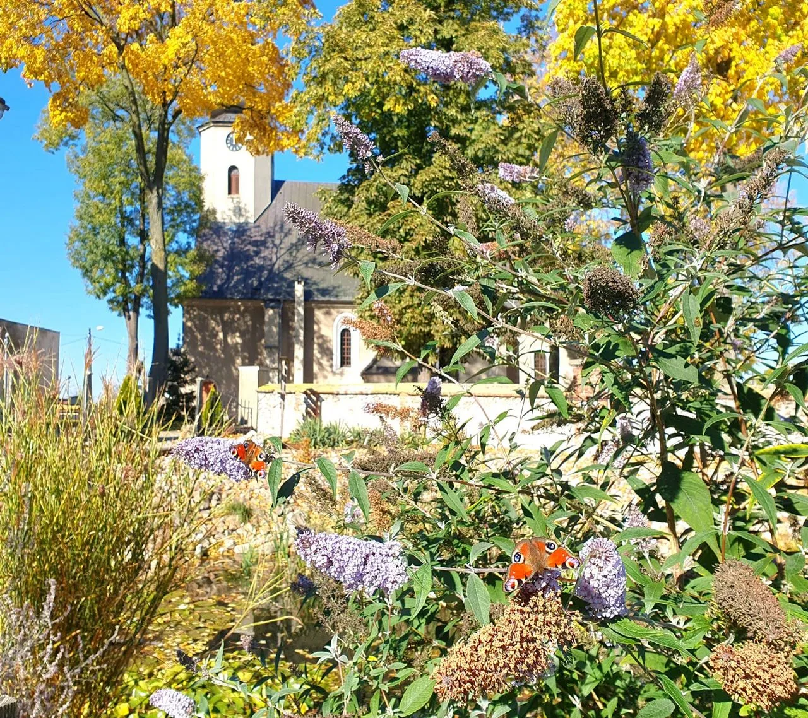
Dzisiaj
Nie tylko miejsce kultu, lecz dom, do którego człowiek może czuć się zaproszony — na modlitwę, spotkanie, rozmowę i wspólne działanie.
Miejsce niedzielnych spotkań, wydarzeń i koncertów. Stół stał się jednym z najprostszych sposobów budowania relacji.
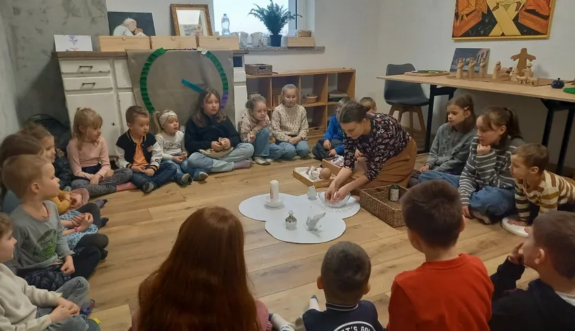
Dzieci odkrywają Boga poprzez biblijne opowieści, refleksję, zabawę i doświadczenie.
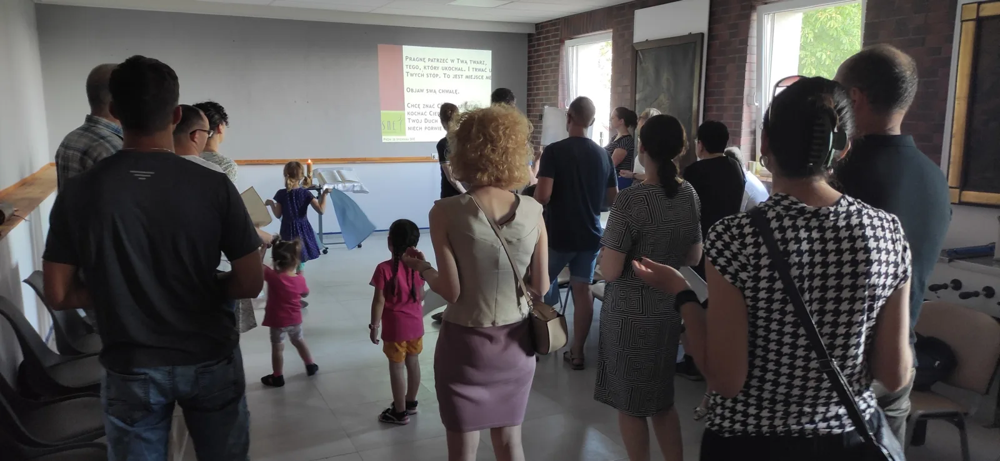
SNE, Apostolat Maryjny, III Zakon św. Franciszka, wieczory uzdrowienia i czuwania tworzą żywą sieć odpowiedzialności.
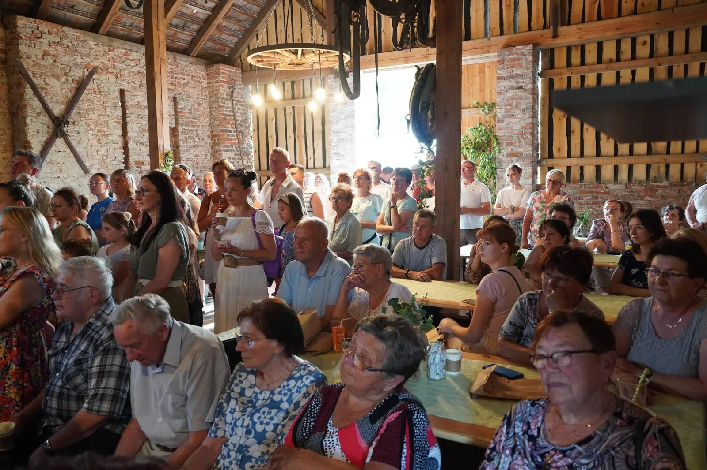
Odpust, festyny i spotkania wokół parafii pomagają ludziom nie tylko uczestniczyć, ale naprawdę być razem.
„Alpha dała mi nowych znajomych, nowe siły, więcej wiary. Dała mi czwartek, na który czekałem cały tydzień”.
„Wiedziałam, że mogę powiedzieć, co myślę i nikt mnie nie oceni”.
Czy zawsze tak było?
Mała wieś łatwo może uwierzyć, że „jak na Lubecko, to i tak dużo”. My jednak zaczęliśmy pytać nie tylko o to, ilu ludzi przychodzi, lecz także: co naprawdę przyciąga ludzi do parafii i jak bardzo nam na nich zależy?
Ludzie nie przejmują się tym, ile wiesz, dopóki nie dowiedzą się, jak bardzo ci na nich zależy.John Maxwell
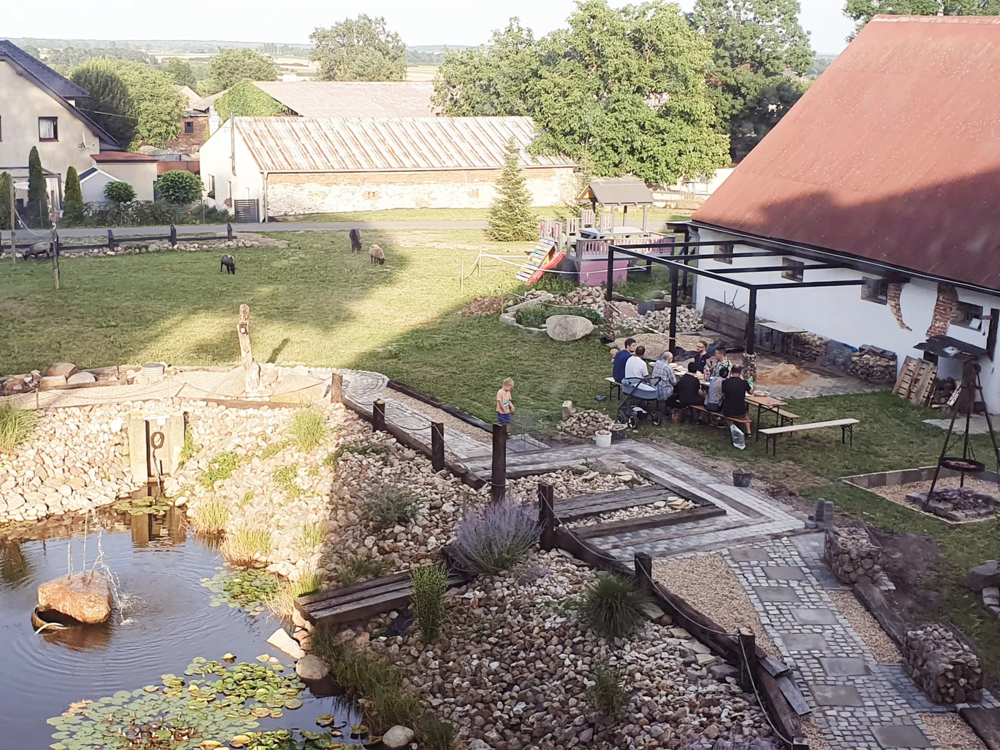
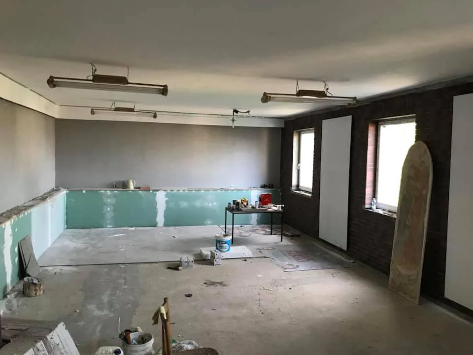
Krok po kroku
Najpierw sami chcieliśmy sprawdzić, czym naprawdę jest Alpha. Dopiero własne doświadczenie stało się punktem odniesienia dla następnych kroków.
Pierwsza edycja
Zaczęliśmy od własnej ekipy i własnego doświadczenia. Przy stole, rozmowie i modlitwie uczyliśmy się nie tylko formatu, ale przede wszystkim gościnności.

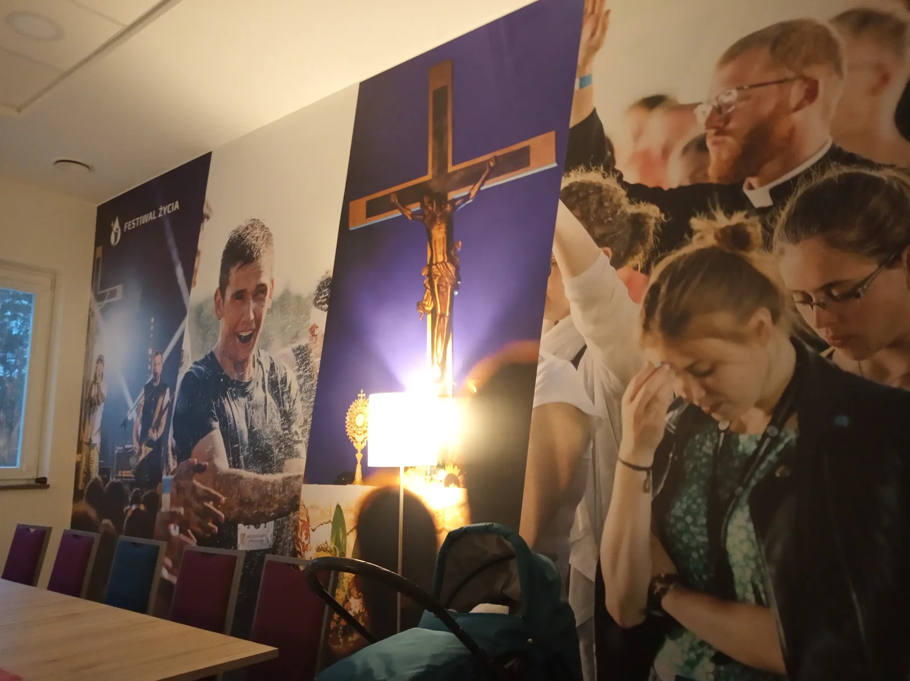
Nowa przestrzeń
Po zakończeniu remontu można było zaprosić ludzi do nowo oddanej sali. Przestrzeń zaczęła służyć spotkaniu, a nie tylko być pomieszczeniem.

Kolejne edycje
Po pierwszym doświadczeniu przyszły następne edycje — także online — oraz Alpha dla młodzieży. Każda z nich dawała ekipie kolejne doświadczenie i nowych ludzi gotowych służyć.
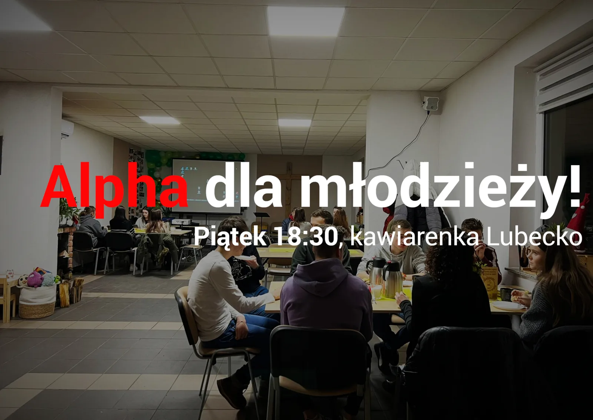
„Nacisnęłam hamulec. Pewne rzeczy stały się mniej ważne. Znów zaczęłam rozmawiać z Bogiem”.
20 sierpnia 2024
Podpisanie porozumienia z Alpha Polska potwierdziło kolejny etap: Alpha jako silnik ewangelizacji w parafii oraz dzielenie się doświadczeniem z innymi miejscami.
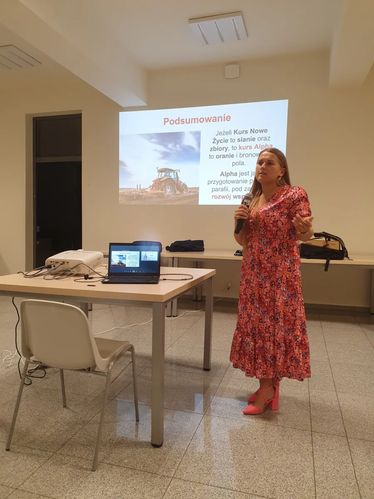
Cykl na naszym przykładzie
To obraz skali używany w naszej prezentacji: wiele osób wciąż czeka na zaproszenie, a kolejne edycje pomagają przejść od wiary do posługi, przywództwa i zmiany kultury parafii.
Gościnna przestrzeń spotkania i relacji.
Ten sam prosty język Ewangelii w nowym pokoleniu.
Przestrzeń odkrywania Boga przez dzieci.
Wiara przechodząca w konkretną odpowiedzialność.
„Teraz już wiem, że wszystko, co dzieje się w moim życiu, to interwencja Boża”.
„Alpha dała mi drugie życie”.
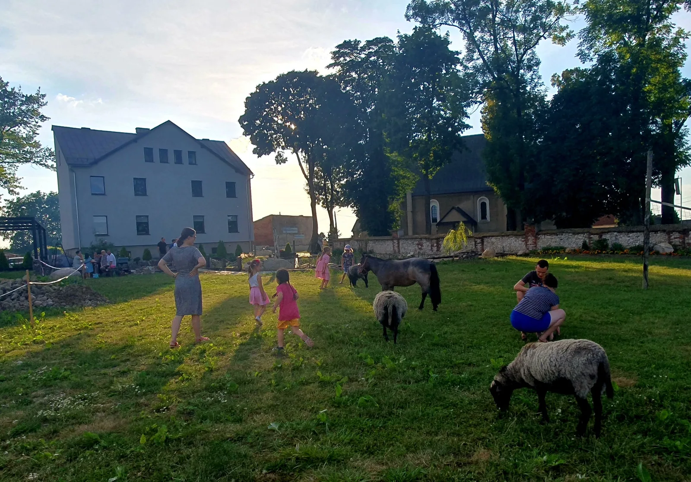
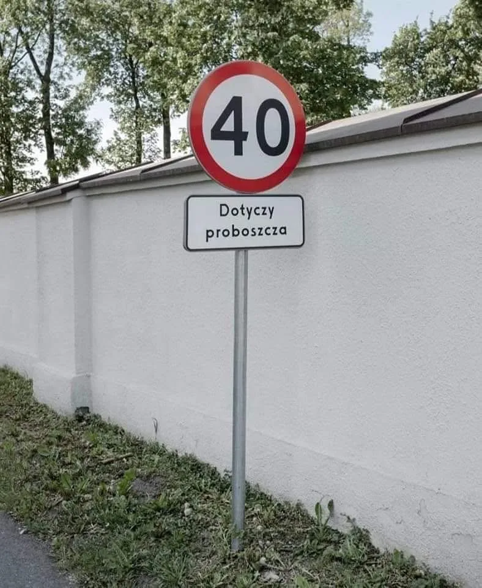
Kultura zaufania i otwartości
Otwartość widać w sposobie zarządzania, udostępnianiu przestrzeni i zaufaniu do świeckich. Miejsce ma być dla młodych i starszych, kobiet i mężczyzn — również z odrobiną lokalnego humoru.
Świecki może dotrzeć tam, gdzie proboszcz nie dotrze. Kiedy ludzie działają razem, zasięg parafii staje się większy.